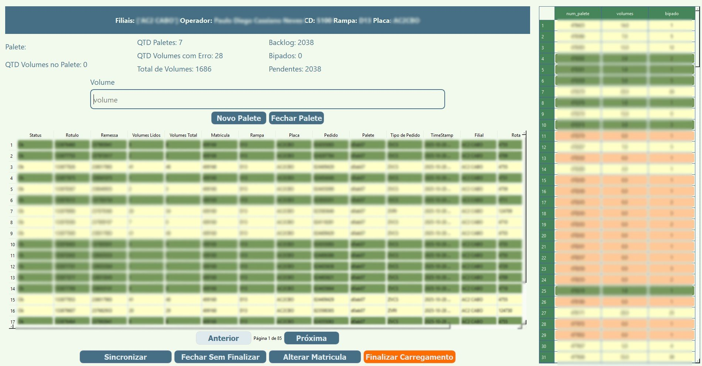
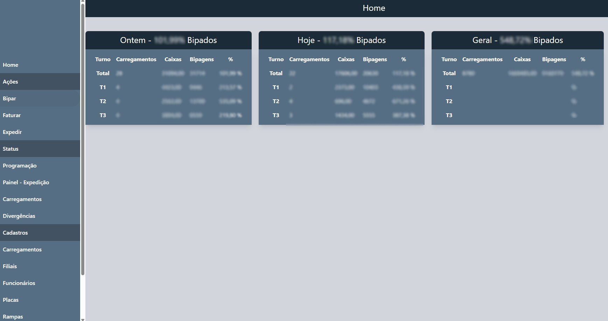

Aplicativo Desktop

Interface de Gestão Web
DockSafe - Sistema de Dupla Verificação para Expedição Logística
O Desafio O processo de expedição de cargas enfrentava um desafio crítico: a alta incidência de envios incorretos, que geravam custos operacionais significativos. Era necessária uma solução tecnológica para implementar uma dupla checagem confiável e eficiente no momento do carregamento.
A Solução Criei o "DockSafe", uma plataforma completa de verificação de ponta-a-ponta. O sistema foi arquitetado em Python e Django, com um banco de dados PostgresSQL, garantindo robustez e escalabilidade.
O núcleo da solução envolve:
- 🟢 Processamento de Dados: Utilização da biblioteca Pandas para analisar e validar os dados de carregamento em tempo real.
- 🟢 Interfaces de Usuário: O projeto conta com múltiplas interfaces para atender a diferentes necessidades:
- 🟢 Um dashboard analítico em Streamlit para o gerenciamento e visualização de KPIs.
- 🟢 Uma aplicação desktop em PyQt6 para uso dos operadores diretamente na doca de carregamento.
- 🟢 Uma interface web administrativa responsiva, construída com HTML, TailwindCSS e Javascript.
Resultados e Impacto A implementação do DockSafe transformou o processo de expedição. Ao automatizar e reforçar a verificação, o sistema alcançou um sucesso mensurável, gerando uma redução direta de 50% nos custos associados a erros de envio.